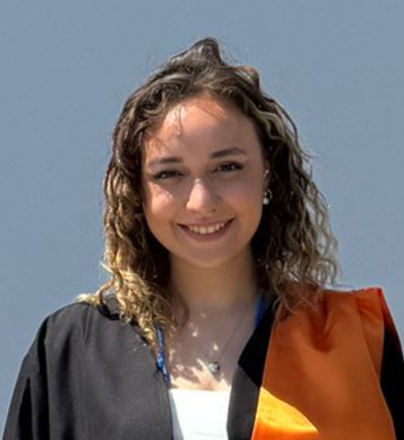
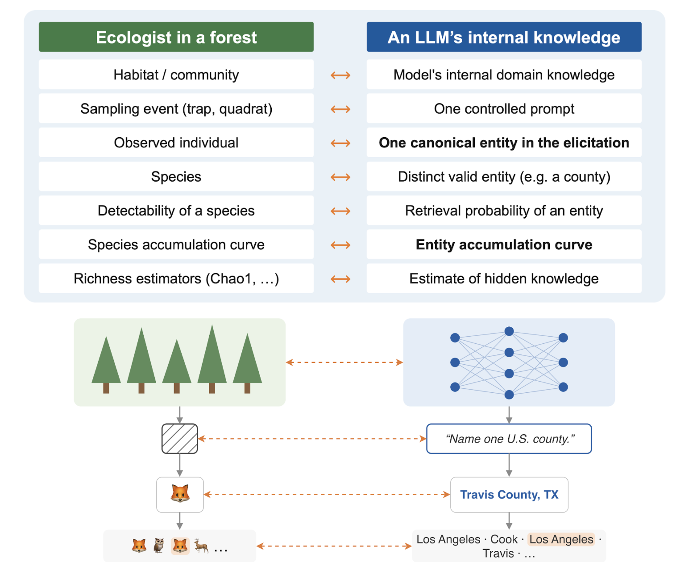
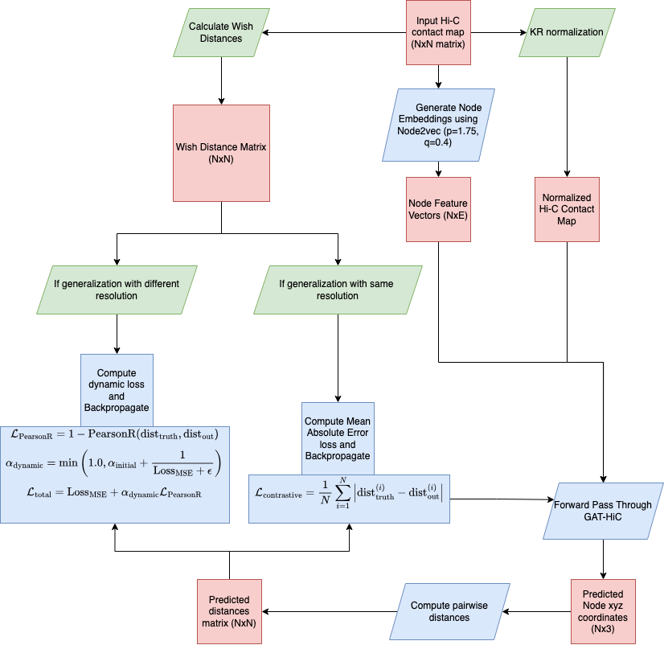
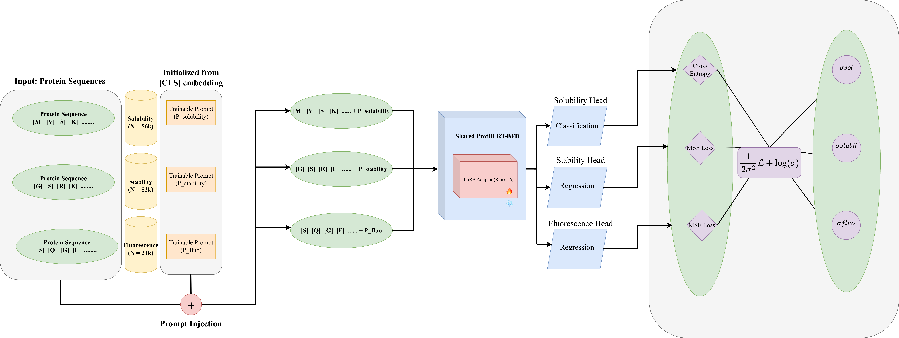

About Me
I’m Beyza Kaya, a PhD researcher in the IDEAS (Helmholtz School for Integrated Data Science in Environmental and Life Sciences) program at Helmholtz-Zentrum Dresden-Rossendorf (HZDR), in collaboration with ScaDS.AI, TU Dresden. My current research focuses on understanding and estimating the hidden knowledge of large language models (LLMs), using sampling-based approaches inspired by ecological biodiversity estimation.
I work with Prof. Simon Razniewski and Prof. Justin Calabrese on developing methods to estimate how much knowledge LLMs contain about specific domains, including the use of ecological richness estimators and entity accumulation curves.
Previously, I completed my Master's in Artificial Intelligence at Özyeğin University, where my research focused on bioinformatics, computational biology, graph neural networks, and spatio-temporal gene expression modeling.
Location: Dresden, Germany
Email:
h.kaya@hzdr.de
Education
- PhD in Integrated Data Science (IDEAS) — TU Dresden & Helmholtz-Zentrum Dresden-Rossendorf (HZDR), Germany (2026–Present)
- MSc Artificial Intelligence (Bioinformatics) — Özyeğin University, Türkiye (2024–2026)
- BSc Computer Science & Industrial Engineering (Double Major) — Özyeğin University, Türkiye (2019–2024)
Technical Skills
- LLMs & Knowledge Evaluation: Knowledge Elicitation, Entity Extraction, Sampling-Based Evaluation, Knowledge Estimation
- Statistical Methods: Species/Entity Accumulation Curves, Richness Estimation, Chao1, Statistical Sampling
- Artificial Intelligence: Machine Learning, Deep Learning, Graph Neural Networks, Multi-Task Learning
- Bioinformatics & Computational Biology: Protein Language Models, Chromatin Modeling, Hi-C Data Analysis, Spatio-Temporal Genomics
- Programming & Data Science: Python, PyTorch, TensorFlow, pandas, NumPy
Featured Research
GAT-HiC: Graph Attention Networks predicting unseen chromatin structures
(TCBB 2025)
STEP: Spatio-Temporal Expression Prediction using graph-based modeling
(bioRxiv 2025)
Projects
1. How Much Does an LLM Know? — Sampling Hidden Knowledge Like an Ecologist
PhD Research Project | IDEAS, HZDR & ScaDS.AI, TU Dresden (2026–Present)
Researchers: Hatice Beyza Kaya, Justin Calabrese, Simon Razniewski
Large language models (LLMs) can answer questions about many different domains, but how much do they actually know? Existing benchmarks evaluate whether a model answers specific questions correctly, but they do not reveal how much knowledge a model contains about an entire domain.
Inspired by ecological biodiversity estimation, this project investigates how sampling methods can be used to estimate the hidden knowledge of LLMs. Just as ecologists sample a community to estimate how many species remain undiscovered, we treat each elicited LLM answer as a sample and each distinct valid entity as a species.

Figure: Analogy between ecological biodiversity sampling and sampling-based estimation of hidden knowledge in large language models.
Approach
- Treat each elicited LLM answer as a sampling event and each distinct valid entity as an observed species.
- Construct fixed reference universes for specific domains, such as 5,295 living mammal species from Wikidata, to evaluate the completeness of retrieved knowledge.
- Analyze entity accumulation curves, singletons and doubletons to understand how much knowledge remains unseen.
- Apply ecological richness estimators, including Chao1, to estimate the number of entities that may remain undiscovered.
Two Research Phases
- Elicitation: Investigating how different prompting strategies affect the knowledge observed in LLM outputs, including independent requests, batch requests, different prompt phrasings and prompt templates.
- Estimation: Evaluating richness estimators using simulated communities with known distributions and comparing observed richness, estimated richness and the size of the reference universe.
First Results and Research Contributions
- Initial experiments reveal that LLMs repeatedly retrieve a common core of well-known entities, while completeness against the fixed reference universe remains low.
- High sample coverage alongside low completeness highlights the distinction between repeatedly retrieving known entities and discovering the full domain.
- The project aims to establish a sampling framework for measuring LLM knowledge under specified configurations and identifying which richness estimators are reliable for different elicitation designs.
2. GAT-HiC — Graph Attention Model for Chromatin Structure Prediction
GAT-HiC is a graph-attention–based model that predicts unseen chromatin structures from Hi-C contact maps. Developed in collaboration with my advisor Dr. Emre Sefer.

Figure: GAT-HiC graph attention model architecture for chromatin structure prediction.
- Leverages graph attention networks (GATs) to model 3D chromatin organization
- Generalizes across different resolutions, enzymes, and species
- Encodes biologically informed graph features derived from genomic regions
- Designed to enable cross-setting and cross-species structural predictions
3. STEP — Spatio-Temporal Expression Prediction
STEP (Spatio-Temporal Expression Prediction) consists of two models: STEPmr and STEPmi, designed for mRNA-specific and miRNA-specific gene sets.

Figure: STEP architecture overview showing integration of mRNA and miRNA time-series with Hi-C features.
- Predicts gene expression levels across multiple time points
- Incorporates Hi-C-derived features and graph representations of interacting genes
- Models dynamic mRNA/miRNA regulatory interactions over time
- Integrates chromatin structure with temporal expression data
4. PGMTL — Multi-Task Protein Language Modeling (Ongoing)
PGMTL is an ongoing research project aiming to design a generalized multi-task learning framework for protein sequence modeling. The core idea is to leverage a shared ProtBERT encoder to jointly learn multiple biologically relevant downstream tasks through structured task conditioning.

Figure: PGMTL framework illustrating a shared ProtBERT encoder with task-specific heads and semantic prompting for multi-task biological prediction.
- Uses ProtBERT as a shared encoder with LoRA-based adaptation for parameter-efficient fine-tuning
- Investigates semantic prompting to condition the model on task identity and biological context
- Compares multiple multi-task optimization strategies, including uncertainty weighting, PCGrad, DWA, curriculum learning, and naive joint training
- Analyzes trade-offs, gradient conflicts, and representation sharing across related protein prediction tasks
- Status: In progress
Publications
- Kaya B., Sefer E., GAT-HiC: Graph Attention Networks for Chromatin Structure Prediction, TCBB 2025
- Kaya B., Sefer E., Spatio-Temporal Expression Prediction (STEP), bioRxiv 2025
Contact & Academic Links
For collaboration or academic inquiries, feel free to reach out: h.kaya@hzdr.de
Academic & professional profiles: LinkedIn | GitHub | Google Scholar